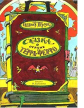

В основе сюжета сказки лежит рассказ дедушки своему внуку о некой стране, где люди жили мирно и счастливо, проводя дни в мирном труде, пока в стране не появились три алчных и злых короля - Деревянный, Железный и Золотой. В погоне за властью и собственной выгодой Деревянный и Железный короли затевают между собой страшную вражду, из-за которой в итоге пострадают простые жители страны. Если бы не сильный и отважный юноша, некогда цветущая и благополучная страна Терра-Ферро и все ее жители погибли бы. Но злые чары рухнули, и жители страны смогли возродить свою прекрасную землю.